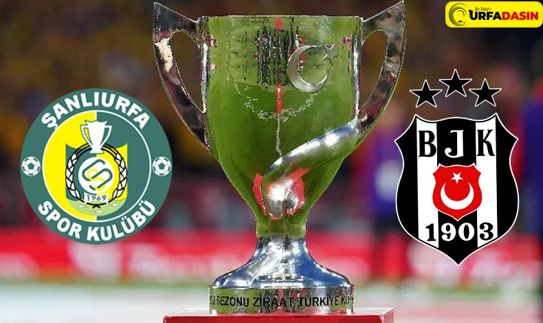
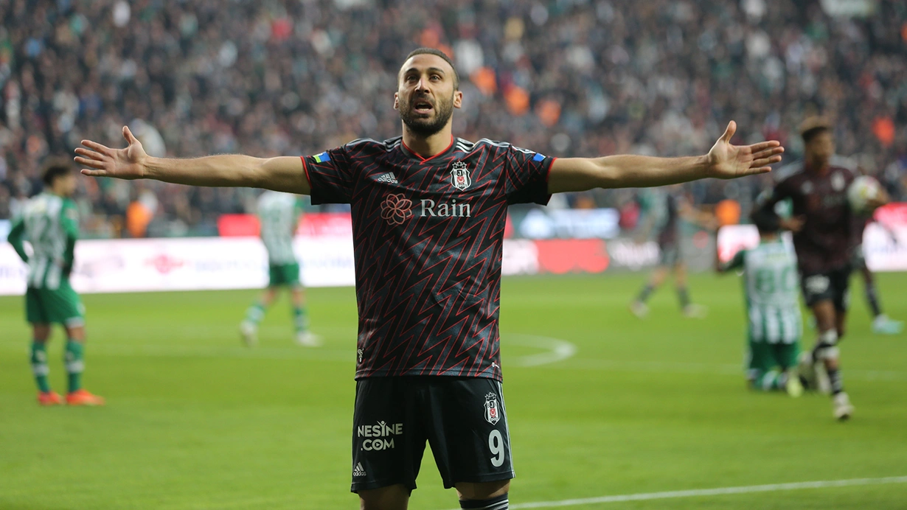
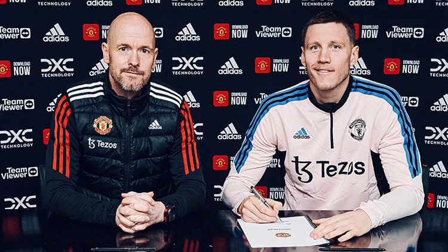
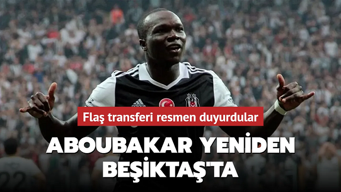
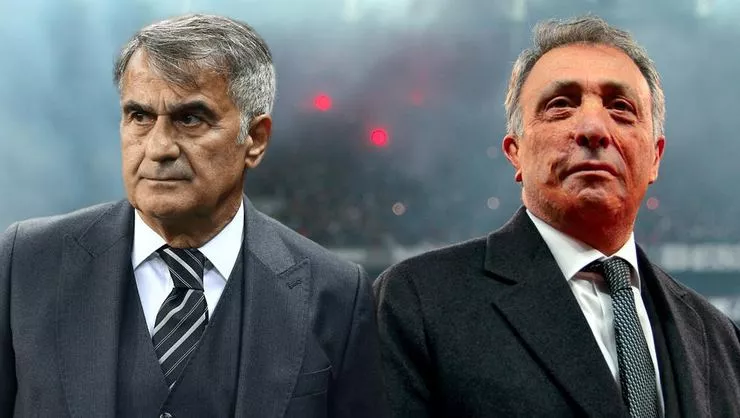

Şanlıurfaspor'un Rakibi Belli Oldu Beşiktaş
Ziraat Türkiye Kupası 5. Eleme Turu kura çekimi, TFF Riva Hasan Doğan Milli Takımlar Kamp ve Eğitim Tesisleri Orhan Saka Konferans Salonu'nda gerçekleşti.
Devamını Oku...

Beşiktaş, Konyaspor'u 90+5'te yıktı!
Süper Lig'in 19. haftasında Beşiktaş, deplasmanda karşılaştığı Konyaspor'u 1-0 geriye düştüğü'te bulduğu golle 2-1 mağlup etmeyi başardı.
Devamını Oku...

Son dakika transfer haberi
Beşiktaş'la yollarını ayıran Wout Weghorst, Manchester United'la sözleşme imzaladı.
Devamını Oku...

Vincent Aboubakar Beşiktaş'ta!
Flaş transferi resmen duyurdular.Beşiktaş Vincent Aboubakar ile yaptığı görüşmelerde anlaşma sağladı.
Devamını Oku...

Beşiktaş'a transferde şok! Takımında kalmaya karar verdi
Beşiktaş, ara transferde kadrosunu güçlendirmek adına çalışmalarını sürdürürken ismi Siyah-Beyazlılar ile anılan yıldız oyuncu konusunda şok bir gelişme yaşandı.
Devamını Oku...